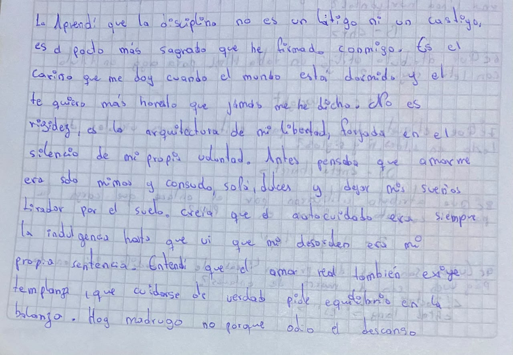
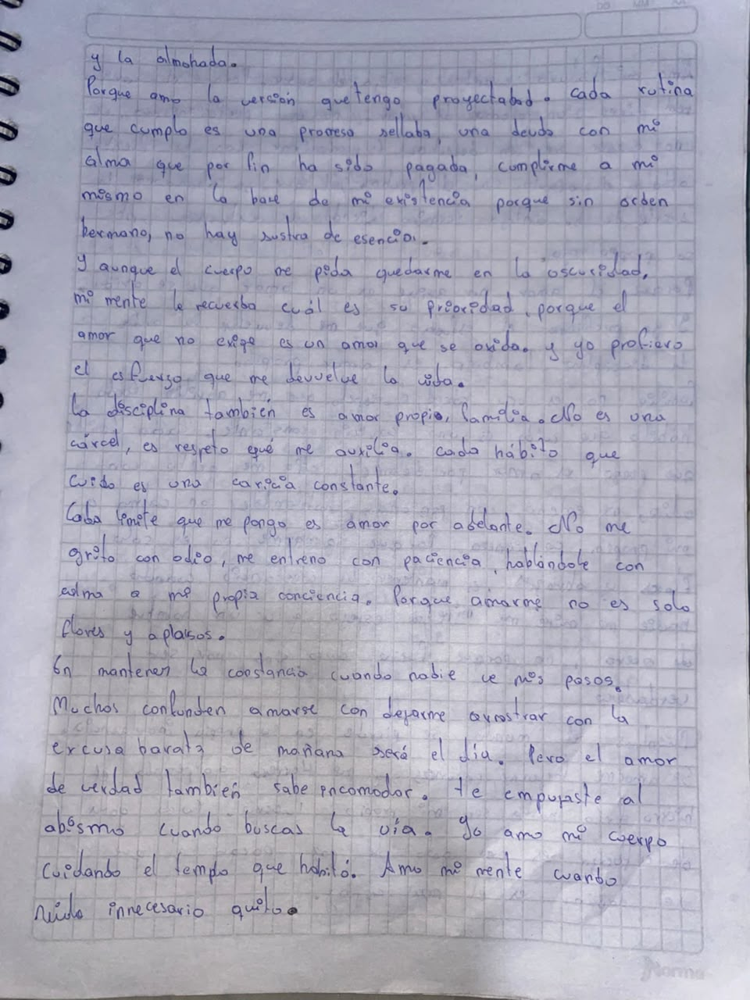
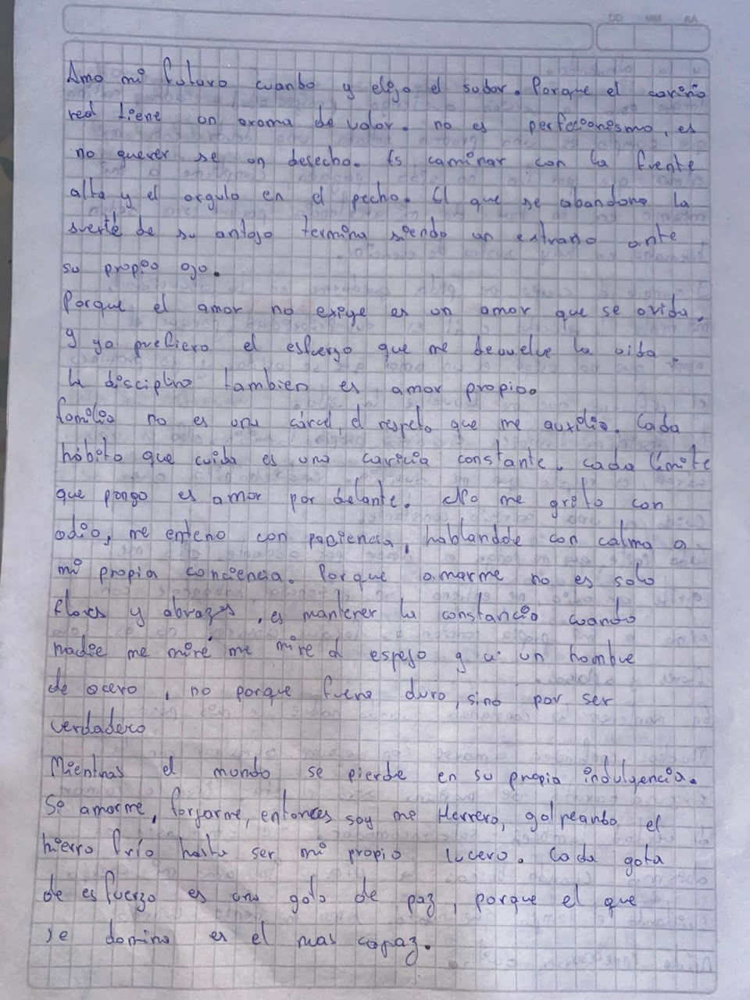
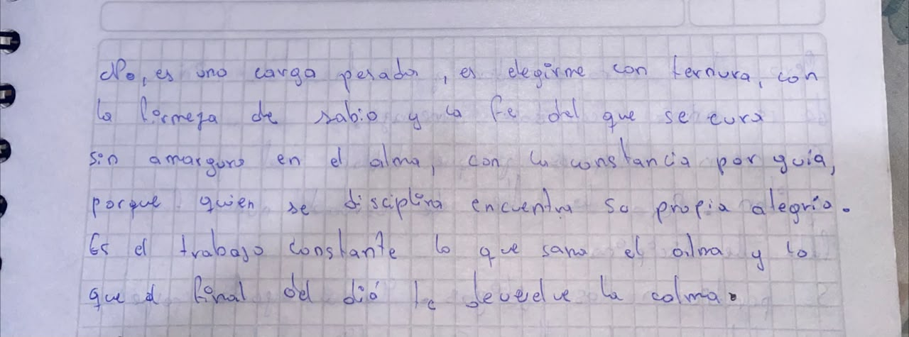
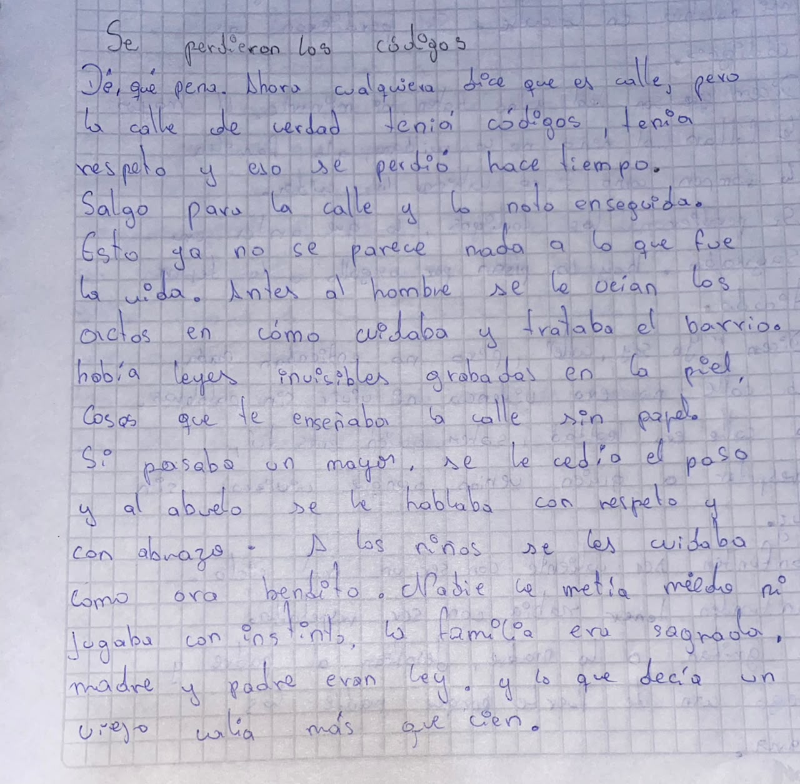
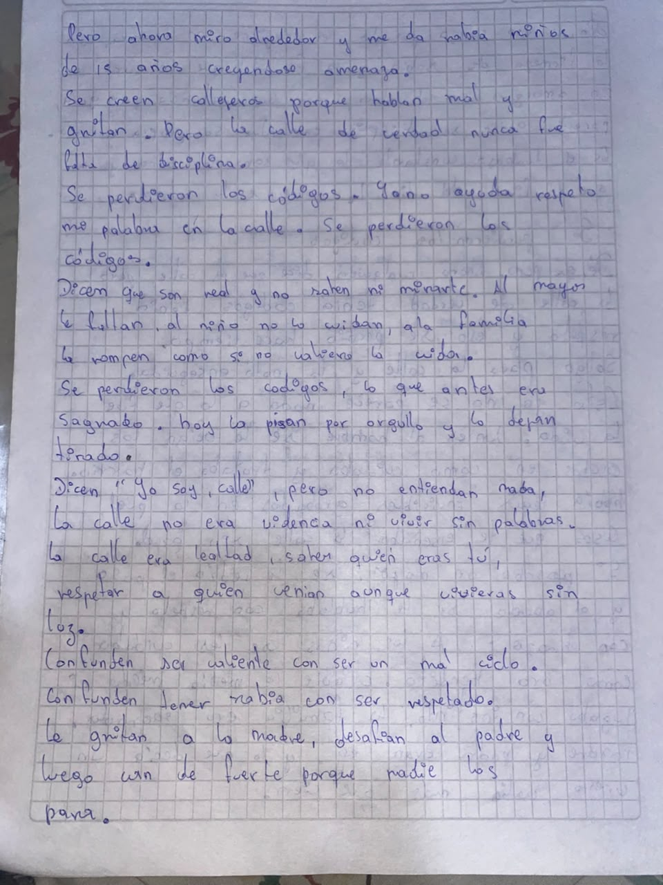
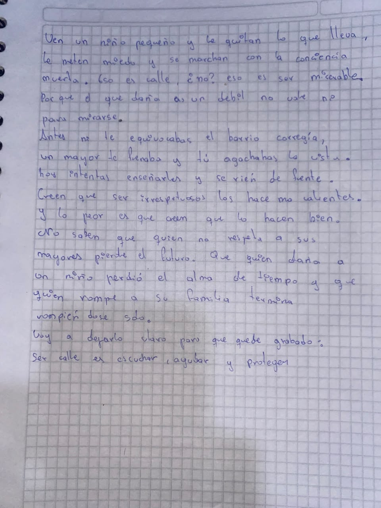

Disciplina y amor propio
Reseña
Esta canción transmite un mensaje relacionado con el esfuerzo personal, la confianza y la importancia de aprender a valorarse. Su contenido invita a reflexionar sobre las decisiones que tomamos y cómo estas pueden influir en nuestro crecimiento. También resalta que tener disciplina permite avanzar y superar dificultades, incluso cuando las cosas no salen como esperamos.
LETRA DE LA CANCIÓN




Se perdieron los códigos
Reseña
Esta canción invita a pensar en los cambios que se producen en la sociedad y en la manera en que las personas se relacionan. Su mensaje puede interpretarse como una crítica a la pérdida de valores, al respeto y a ciertas actitudes que antes tenían mayor importancia. A través de su contenido, nos anima a cuestionar lo que ocurre a nuestro alrededor y a analizar nuestras propias acciones.
LETRA DE LA CANCIÓN


